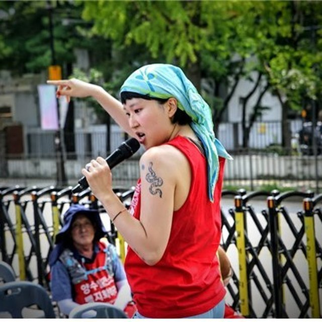
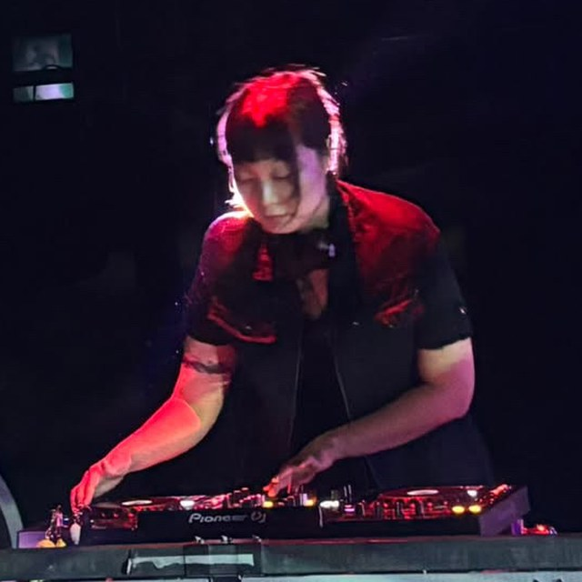
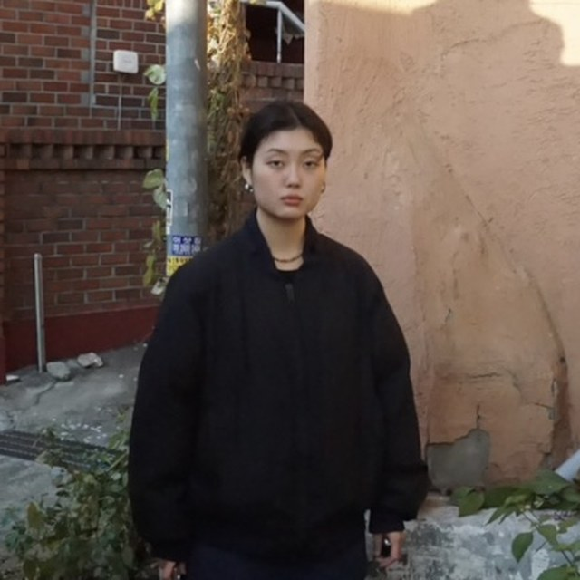
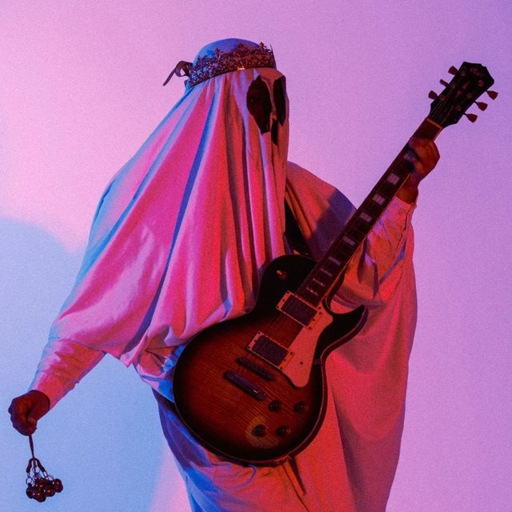
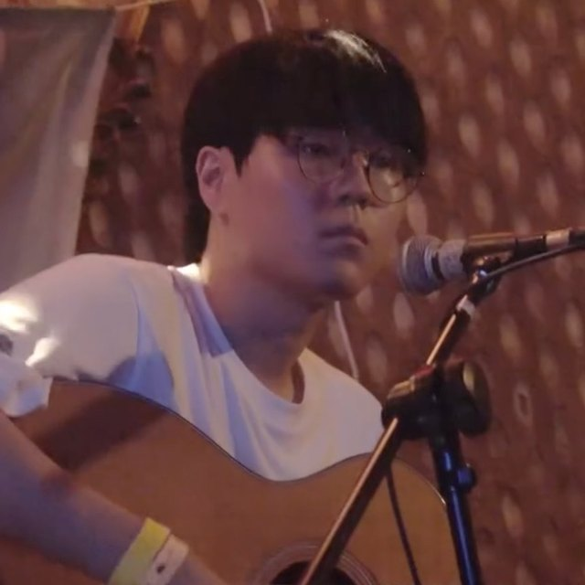
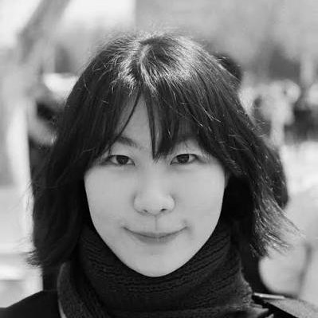

지금 어디까지 왔나
홍천양수발전소는 한국수력원자력이 풍천리 일대에 600MW(300MW×2기) 규모로 추진하는 사업입니다. 총사업비 1조 5,863억 원, 사업 면적 1,530,279㎡. 2025년 8월 29일 실시계획이 승인·고시됐고, 12월 공사계획이 인가됐습니다. 2026년 1월 본공사가 착공됐습니다.
2019년 3월 첫 집회 이후 8년째, 주민들은 705번이 넘게 거리에 섰습니다. 평균 연령은 약 70세입니다. 2024년 7월 홍천군청 농성에서 주민들이 퇴거불응 혐의로 연행됐고, 같은 해 12월 총 1,800만 원의 벌금 약식명령이 내려졌습니다. 예순에서 여든의 손들이 지금 법정에 서 있습니다.
베어지는 나무만 잃는 것이 아닙니다. 발전소가 들어서면 살아남은 잣나무들도 온전히 자라기 어려운 환경이 됩니다.
숲은 한 번 베이면 돌아오지 않습니다.
오늘 본 숲을 기억해주십시오.
누리집 pungcheonri.vercel.app
후원 계좌
농협 356-1559-4666-63
예금주 이창후
문의
대책위 이창후 총무 010-8918-8933
무대 박성율 목사 010-8748-3044
우리의 요구
주최 · 야호야호단
출연진 프로필 사진 출처 — 뉴스아트, 경기아트콜렉티브, 주최 측 제공
우리의 나무를 자르는 건우리의 목을 자르는 거야
2026. 10. 10. 토
오후 2시 – 6시경
풍천리 마을회관 앞
강원 홍천 화촌면
무료 · 예매 없음 오늘의 음악가는 안쪽에
오후 2시부터 6시경까지 일곱 팀이 무대에 오릅니다. 순서는 현장에서 알려드립니다.
“톱날은 이미 숲의
— 「木자르기」 보도자료에서
가장자리를 지났다.”

양차애
사랑노래를 짓고 부릅니다. 잘 패배하는 사람이 되는 것이 꿈입니다.


DJ스탑원 x DJ괄
두 사람이 번갈아 판을 올리는 b2b 세트. 마을회관 앞마당에 턴테이블이 놓입니다. 노래가 멎은 자리를 비트가 이어받습니다.

사바하
2013년 솔로 프로젝트로 출발해 2023년 듀오로 자리잡은 둠드론 밴드. 리더 The Slaughter의 기타·보컬에 2025년 드러머 The Mortician이 합류해 서울·수원을 기반으로 활동합니다. 스스로 ‘사이비 오컬트 둠드론’이라 부릅니다. 2024년 정규 「THUNDER ROCKS」.

달 위의 콜린스
홍대 클럽빵을 거점으로 공연해온 팀. 2025년 가을 두 달 사이에 싱글 「비둘기의 失樂園」·「PM 7:37」과 EP 「19.8㎡에서의 漂流記」, 앨범 「Thief 86」을 잇달아 냈습니다.
박지휘
프리포크 싱어송라이터. 일러스트레이터 2da(이다)의 그림에서 따온 ‘sickbaby’라는 이름으로도 불렀습니다. 로파이한 프리포크로 시작해, 근래에는 엘리엇 스미스의 새드코어에 기운 곡을 씁니다.

최양다음 NEXT
독학으로 음악을 익힌 싱어송라이터. 아버지 성 ‘최’와 어머니 성 ‘양’에 ‘다음’을 붙인 이름으로, 호주제에 맞선다는 뜻을 담았습니다. 그 이름을 여러 나라 말로 씁니다 — 다음, NEXT, 次, Nächste, 翌. 세월호 10주기 추모, 수요시위, 팔레스타인 연대 집회, 5·18 기념식 같은 자리에서 노래해왔습니다.
VAN KIDEN
랩과 싱잉을 오가는 뮤지션. 2022년 싱글 「LIGHT」로 데뷔했습니다. 느끼는 감정을 그대로 전하고, 스스로에게 부끄럽지 않은 음악을 만들어가려 합니다.
‘#풍천리’로 남겨주세요
함께 노래하고 춤추며, 화내고 소리 질러주세요. 베어질 숲을 직접 보고, 사진을 찍어 남겨주세요.